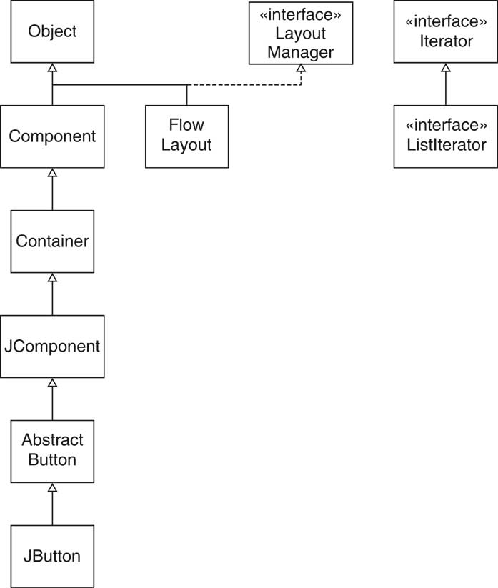
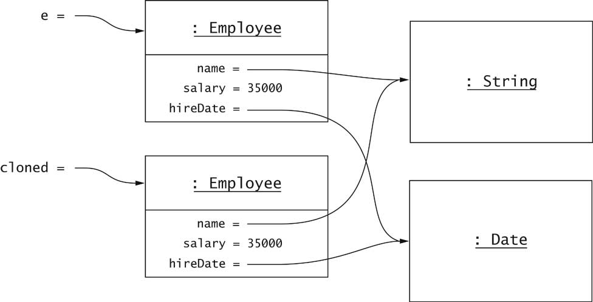
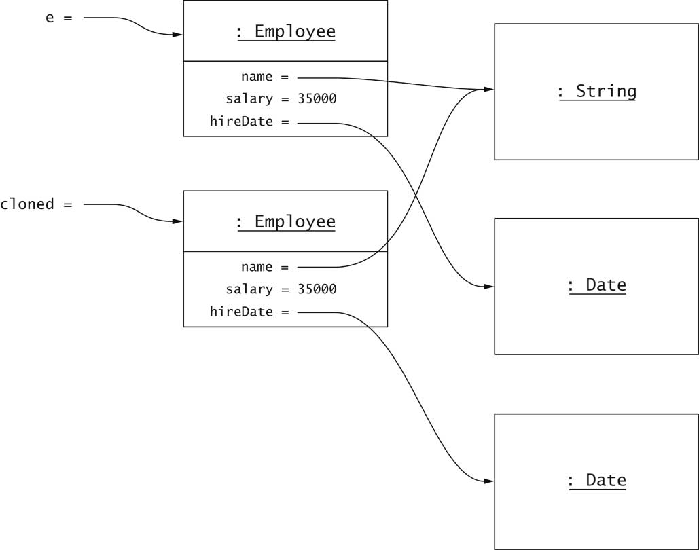
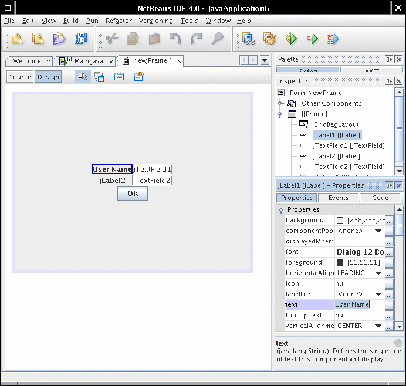
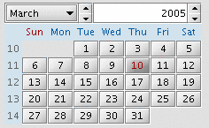
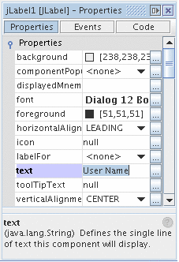
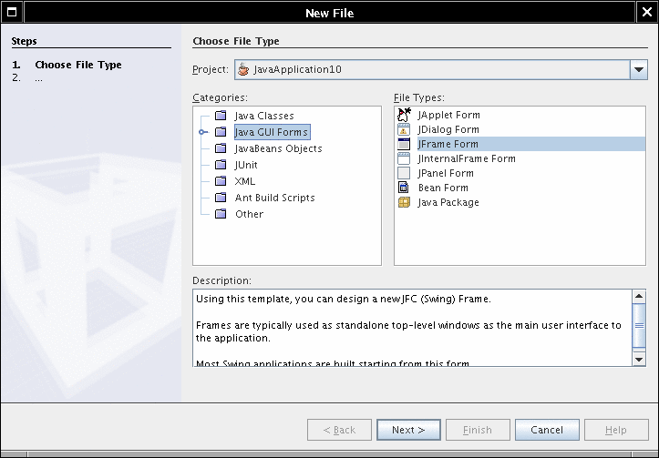

Object-Oriented Design & Patterns
Cay S. Horstmann
Chapitre 7
Le modèle Objet Java

Matière du chapitre
- Le système de type Java
- Requête sur le type
- La classe Object
- Copie légère et profonde
- Sérialisation
- Réflection
- Le modèle de composant Java Beans
Types
- Type : ensemble de valeurs et les opérations qui peuvent s'appliquer aux
valeurs
- Langage fortement typé : le compilateur et le système d'exécution
vérifient qu'aucune opération qui s'exécute ne viole les règles du système
de type
- Vérification lors de la compilation :
Employee e = new Employee();
e.clear(); // ERROR
- Vérification lors de l'exécution :
e = null;
e.setSalary(20000); // ERROR
Types Java
- Types primitifs :
int short long byte
char float double boolean
- Types classe
- Types interface
- Types tableau
- Type null
- Notez : void n'est pas un type
Exercise: Quel genre de type ?
- int
- Rectangle
- Shape
- String[]
- double[][]
Valeurs Java
- valeur de type primitif
- référence à un objet de type classe
- référence à un tableau
- null
- Notez : On ne peut pas avoir de valeur de type interface
Exercise: Quel genre de valeur ?
- 13
- new Rectangle(5, 10, 20, 30);
- "Hello"
- new int[] { 2, 3, 5, 7, 11, 13 }
- null
Relation de sous-type
S est un sous-type de T si
- S et T sont de même type
- S et T sont des types classe, et T est une superclasse directe ou
indirecte de S
- S est une classe type, T est un type interface, et S ou une de ces
superclasses implémente T
- S et T sont des types interface, et T est une superinterface directe ou
indirecte de S
- S et T sont des types tableau, et le type des composants de S est un
sous-type du type des composants de T
- S n'est pas un type primitif et T est le type Object
- S est un type tableau et T est Cloneable ou Serializable
- S est le type null et T n'est pas un type primitif
Exemples de sous-type
- Container est un sous-type de Component
- JButton est un sous-type Component
- FlowLayout est un sous-type LayoutManager
- ListIterator est un sous-type Iterator
- Rectangle[] est un sous-type Shape[]
- int[] est un sous-type Object
- int n'est pas un sous-type long
- long n'est pas un sous-type int
- int[] n'est pas un sous-type Object[]
Exemples de sous-type

ArrayStoreException
Références tableau

Classes "Wrapper"
Types énumérés
- Ensemble fini de valeurs
- Exemple: enum Size { SMALL, MEDIUM, LARGE }
- Usage typique :
Size imageSize = Size.MEDIUM;
if (imageSize == Size.SMALL) . . .
- Plus sécuritaire que les constantes entières
public static final int SMALL = 1;
public static final int MEDIUM = 2;
public static final int LARGE = 3;
Typesafe Enumerations
- enum équivaut à une classe avec un nombre fixe d'instances
public class Size
{
private /* ! */ Size() { }
public static final Size SMALL = new
Size();
public static final Size MEDIUM = new
Size();
public static final Size LARGE = new Size();
}
- Les types enum sont des classes; on peut ajouter des méthodes,
des champs, des constructeurs
Requête sur le type
- Tester si e est de type Shape :
if (e instanceof Shape) . . .
- Commun avant une conversion :
Shape s = (Shape) e;
- On ne connaît pas le type exacte de e
- Peut être n'importe quelle classe qui implémente Shape
- Si e est null, le test retourne false
(pas d'exception)
La classe Class
Un objet Employee vs un objet Employee.class

Requête sur le type
- Tester si e est un Rectangle :
if (e.getClass() == Rectangle.class) . . .
- On peut utiliser ==
- Un seul objet Class pour toutes les classes
- Le test échoue pour les sous-classes
- Utiliser instanceof pour tester les sous-types :
if (e instanceof Rectangle) . . .
Types tableau
Object : La superclasse cosmique
- Toutes les classes étendent Object
- Les méthodes les plus utiles :
- String toString()
- boolean equals(Object otherObject)
- Object clone()
- int hashCode()
La méthode toString
- Retourne une représentation de l'objet sous forme de chaîne
- Utile pour déverminer
- Exemple : Rectangle.toString retourne quelque chose comme
java.awt.Rectangle[x=5,y=10,width=20,height=30]
- toString est utilisée par l'opérateur de concaténation
- aString + anObject
équivaut à
aString + anObject.toString()
- Object.toString affiche le nom de la classe et l'adresse de
l'objet
System.out.println(System.out)
donne
java.io.PrintStream@d2460bf
- L'auteur de PrintStream n'a pas redéfini toString :
Redéfinir la méthode toString
- Formater tous les champs :
public class Employee
{
public String toString()
{
return getClass().getName()
+ "[name=" + name
+ ",salary=" + salary
+ "]";
}
...
}
- Chaîne typique :
Employee[name=Harry Hacker,salary=35000]
Redéfinir toString dans une sous-classe
- Formater la superclasse en premier
-
public class Manager extends Employee
{
public String toString()
{
return super.toString()
+ "[department=" + department + "]";
}
...
}
- Chaîne typique
Manager[name=Dolly Dollar,salary=100000][department=Finance]
- Notez que la superclasse reporte le nom actuel de la classe
La méthode equals
- equals pour tester l'égalité du contenu
- == pour tester l'égalité de la location
- Utilisé dans plusieurs méthodes de la librairie standard
- Exemple: ArrayList.indexOf
/**
Searches for the first occurrence of the given argument,
testing for equality using the equals method.
@param elem an object.
@return the index of the first occurrence
of the argument in this list; returns -1 if
the object is not found.
*/
public int indexOf(Object elem)
{
if (elem == null)
{
for (int i = 0; i < size; i++)
if (elementData[i] == null) return i;
}
else
{
for (int i = 0; i < size; i++)
if (elem.equals(elementData[i])) return i;
}
return -1;
}
Redéfinir la méthode equals
Redéfinir la sous-classe equals
Les méthodes equals ne sont pas toutes simples
La méthode Object.equals
Exigences pour la méthode equals
- réflexive: x.equals(x)
- symétrique: x.equals(y) si et seulement si y.equals(x)
- transitive: si x.equals(y) et y.equals(z),
alors x.equals(z)
- x.equals(null) doit retourner false
Fixer Employee.equals
- Viole deux règles
- Ajouter un test pour null:
if (otherObject == null) return false
- Qu'est-ce qui arrive si otherObject n'est pas un Employee
- Devrait retourner false (à cause de la symétrie)
- Erreur commune : utiliser instanceof
if (!(otherObject instanceof Employee)) return false;
// don't do this for non-final classes
- Viole la symétrie : Supposons que e et m ont le même nom
et le même salaire
e.equals(m) est vrai (parce que m instanceof
Employee)
m.equals(e) est faux (parce que e n'est pas un instance de
Manager)
- Remède : Tester l'égalité de la classe
if (getClass() != otherObject.getClass()) return false;
La méthode equals parfaite
Hachage
- La méthode hashCode est utilisée dans HashMap et HashSet
- Calcule un int à partir d'un objet
- Exemple: code de hachage d'un String
int h = 0;
for (int i = 0; i < s.length(); i++)
h = 31 * h + s.charAt(i);
- Le code de hachage de "eat" est 100184
- Le code de hachage de "tea" est 114704
Hachage
Copie légère et profonde
- L'instruction (copy = e) fait une copie légère
- Clone pour faire une copie profonde
- Employee cloned = (Employee)e.clone();
Clonage

Clonage
L'interface Cloneable
La méthode clone
public class Employee
implements Cloneable
{
public Object clone()
{
try
{
return super.clone();
}
catch(CloneNotSupportedException e)
{
return null; // won't happen
}
}
...
}
Clonage léger
- clone fait une copie légère
- Les champs d'instance ne sont pas clonés

Clonage profond
- Pourquoi clone ne fait pas une copie profonde ?
Ça ne fonctionnerait pas avec les structures de données cycliques
- Ce n'est pas un problème pour les champs immuables
- On doit cloner les champs muables
public class Employee
implements Cloneable
{
public Object clone()
{
try
{
Employee cloned = (Employee)super.clone();
cloned.hireDate = (Date)hiredate.clone();
return cloned;
}
catch(CloneNotSupportedException e)
{
return null; // won't happen
}
}
...
}
Clonage profond

Clonage et héritage
- Object.clone
- clone : clone seulement les objets Cloneable
- clone : lève exception vérifiée
- On n'a pas ce luxe
- Manager.clone doit être définie si Manager
ajoute des champs muables
- Règle de base : Si vous étendez une classe qui définit clone,
redéfinissez clone
- Leçon à apprendre : Tagging interfaces are inherited. Use them only
to tag properties that inherit
Sérialisation
- Sauvegarder les collections d'objets dans un fichier
Employee[] staff = new Employee[2];
staff.add(new Employee(...));
staff.add(new Employee(...));
- Construire ObjectOutputStream:
ObjectOutputStream out
= new ObjectOutputStream(
new FileOutputStream("staff.dat"));
- Sauvegarder le tableau et fermer le fichier
out.writeObject(staff);
out.close();
Sérialisation
- Le tableau et tous ces objets et leurs objets dépendants sont
sauvegardés
- Employee n'a pas à définir de méthode
- Il a besoin d'implémenter l'interface Serializable
- Une autre interface étiquettée avec aucune méthode
Comment fonctionne la sérialisation
- Chaque nouvel objet rencontré est sauvegardé
- Chaque objet obtient un numéro de série dans le fichier
- Aucun objet n'est sauvegardé deux fois
- La référence à un objet déjà rencontré est sauvegardée comme "référence à #"
Comment fonctionne la sérialisation

Sérialiser des classes non-sérialisables
- Quelques classes ne sont pas sérialisables
- Sécurité ? Classes anonymes ?
- Exemple: Ellipse2D.Double
- Comment sérialiser Car ?
- Supprimer la sérialisation par défaut pour éviter l'exception
- Marquer avec transient :
private transient Ellipse2D frontTire;
- Fournir des méthodes private (!)
private void writeObject(ObjectOutputStream out)
private void readObject(ObjectInputStream in)
- Dans ces méthodes
- Appeler writeDefaultObject/readDefaultObject
- Sauvegarder les autres données manuellement
- Ch7/serial/Car.java
Réflection
- Habileté à exécuter un programme pour trouver ces objets et ces classes
- L'objet Class révèle
- superclasse
- interfaces
- package
- noms et types des champs
- noms, types des paramètres, les types de retour des méthodes
- les types des paramètres du constructeur
Réflection
- Class getSuperclass()
- Class[] getInterfaces()
- Package getPackage()
- Field[] getDeclaredFields()
- Constructor[] getDeclaredConstructors()
- Method[] getDeclaredMethods()
Énumérer les champs
Énumérer les constructeurs
- Afficher le nom et le type des paramètres de tous les constructeurs de Rectangle
:
for (Constructor c : cons)
{
Class[] params = cc.getParameterTypes();
System.out.print("Rectangle(");
boolean first = true;
for (Class p : params)
{
if (first) first = false; else System.out.print(", ");
System.out.print(p.getName());
}
System.out.println(")");
}
- Donne
Rectangle()
Rectangle(java.awt.Rectangle)
Rectangle(int, int, int, int)
Rectangle(int, int)
Rectangle(java.awt.Point, java.awt.Dimension)
Rectangle(java.awt.Point)
Rectangle(java.awt.Dimension)
Obtenir une seule description de méthode
- Fournir le nom de la méthode
- Fournir un tableau des types de paramètre
- Exemple: Get Rectangle.contains(int, int):
Method m = Rectangle.class.getDeclaredMethod(
"contains", int.class, int.class);
- Exemple: Obtenir le constructeur par défaut de Rectangle :
Constructor c = Rectangle.class.getDeclaredConstructor();
- getDeclaredMethod et getDeclaredConstructor sont des
méthodes varargs
Invoquer une méthode
- Fournir un paramètre implicite (null pour les méthodes statiques)
- Fournir un tableau de valeurs de paramètres explicites
- "Wrap" les types primitifs
- "Unwrap" la valeur primitive de retour
- Exemple: Appeler System.out.println("Hello, World") de façon
difficile.
Method m = PrintStream.class.getDeclaredMethod(
"println", String.class);
m.invoke(System.out, "Hello, World!");
- invoke est une méthode varargs
Inspecter les objets
- On peut obtenir le contenu d'un objet à l'exécution
- Utile pour les outils de déverminage génériques
- On a besoin d'obtenir l'accès aux champs privés
Class c = obj.getClass();
Field f = c.getDeclaredField(name);
f.setAccessible(true);
- Lever une exception si la sécurité ne permet pas l'accès
- Accéder à la valeur d'un champ :
Object value = f.get(obj);
f.set(obj, value);
- Utiliser les "wrapper" pour les types primitifs
Inspecter les objets
- Exemple: Coup d'oeil dedans "string tokenizer"
- Ch7/code/reflect2/FieldTester.java
- Sortie
int currentPosition=0
int newPosition=-1
int maxPosition=13
java.lang.String str=Hello, World!
java.lang.String delimiters=,
boolean retDelims=false
boolean delimsChanged=false
char maxDelimChar=,
---
int currentPosition=5
. . .
Inspecter les éléments d'un tableau
- Utiliser les méthodes statiques de la classe Array
-
Object value = Array.get(a, i);
Array.set(a, i, value);
-
int n = Array.getLength(a);
- Construire un nouveau tableau :
Object a = Array.newInstance(type, length);
Types génériques
Méthodes génériques
- Méthode générique = méthode avec un ou plusieurs paramètres qui sont des
types
-
public class Utils
{
public static <E> void fill(ArrayList<E> a, E value, int count)
{
for (int i = 0; i < count; i++)
a.add(value);
}
}
- Une méthode générique dans une classe ordinaire (non-générique)
- Les types des paramètres sont inférés durant l'appel
ArrayList<String> ids = new ArrayList<String>();
Utils.fill(ids, "default", 10); // calls Utils.<String>fill
Limites d'un type
Limites d'un type
- Surmonter les limitations avec une limite de type :
public static <E, F extends E> void append(
ArrayList<E> a, ArrayList<F> b, int count)
{
for (int i = 0; i < count && i < b.size(); i++)
a.add(b.get(i));
}
- extends veut dire "sous-type", c'est-à-dire étend ou implémente
- On peut spécifier plusieurs limites :
E extends Cloneable & Serializable
Wildcards
Wildcards
- Les "wildcards" restrictent les méthodes qui peuvent être appelées :
ArrayList<? extendsE>.set method has the form
? extends E add(? extends E newElement)
- On ne peut pas appeler cette méthode !
- Aucune valeur ne correspond à ? extends E parce que ?
n'est pas connu
- On peut appeler get :
? extends E get(int i)
- On peut assigner une valeur de retour à un élément de type E
Wildcards
- Les "wildcards" peuvent être limités dans une direction opposée
- ? super F ne correspond à aucun supertype de F
- public static <F> void append(
ArrayList<? super F> a, ArrayList<F> b,
int count)
{
for (int i = 0; i < count && i < b.size();
i++)
a.add(b.get(i));
}
- C'est sécuritaire d'appeler ArrayList<? super F>.add:
boolean add(? super F newElement)
- On peut passer tout élément de type F (mais pas un supertype !)
Wildcards
- Un exemple typique -- commencer avec
public static <E extends Comparable<E>> E getMax(ArrayList<E> a)
{
E max = a.get(0);
for (int i = 1; i < a.size(); i++)
if (a.get(i).compareTo(max) > 0) max = a.get(i);
return max;
}
- E étend Comparable<E> alors nous pouvons appeler
compareTo
- Trop restrictif -- on ne peut pas l'appeler avec ArrayList<GregorianCalendar>
- GregorianCalendar n'implémente pas Comparable<GregorianCalendar>,
seulement Comparable<Calendar>
- Les "wildcards" nous aident :
public static <E extends Comparable<? super E>> E getMax(ArrayList<E> a)
Effacement de type
- La machine virtuelle ne connaît pas les types génériques
- Le type des variables est effacé -- remplacé par une limite de type
ou Object s'il n'a pas de limite
- Ex. ArrayList<E> devient
public class ArrayList
{
public Object get(int i) { . . . }
public Object set(int i, Object newValue) { . . . }
. . .
private Object[] elementData;
}
- Ex. getmax devient
public static Comparable getMax(ArrayList a)
// E extends Comparable<? super E> erased to Comparable
- L'effacement nécessite d'interagir avec l'ancien code (pré-JDK 5.0)
Limitations de la généricité
- On ne peut pas remplacer les variables représentant des types par des
types primitifs
- On ne peut pas construire de nouveaux objets de type générique
a.add(new E()); // Error--would erase to new Object()
- Workaround: Use class literals
public static <E> void fillWithDefaults(ArrayList<E>,
Class<? extends E> cl, int count)
throws InstantiationException, IllegalAccessException
{
for (int i = 0; i < count; i++)
a.add(cl.newInstance());
}
- Appeler comme fillWithDefaults(a, Rectangle.class, count)
Limitations de la généricité
- On ne peut former des tableaux avec des types paramétrisés
Comparable<E>[] est illégal. Remède : ArrayList<Comparable<E>>
- On ne peut pas référencer les types des paramètres dans un contexte
statique (champs statiques, méthodes, classes imbriquées)
- On ne peut pas lever ou attraper des exceptions de types génériques
- Cannot have type clashes after erasure. Ex. GregorianCalendar
ne peut pas implémenter Comparable<GregorianCalendar>
puisqu'il implémente déjà Comparable<Calendar>, et tous les
deux sont effacés pour devenir Comparable
Composants
- Plus de fonctionnalités qu'une seule classe
- Réutilisable et adaptable dans de multiple contextes
- "Connecter les composants" pour former des applications
- Modèle fructueux : Les contrôles Visual Basic
- calendrier
- graphe
- base de données
- lien à un robot ou un instrument
- Composants composés dans un programme à l'intérieur d'un environnement de
développement
Un environnement de développement

Java Beans
- Modèle de composant Java
- Un Bean a
- des méthodes (comme les classes)
- propriétés
- évènements
Java Beans

Un calendrier Bean

Une feuille de propriétés
- Éditer les propriétés avec une feuille de propriétés

La classe Façade
- Un Bean est habituellement composé de plusieurs classes
- Un classe est nommée comme classe façade
- Les clients utilisent seulement les méthodes de la classe façade
Le pattern Façade
Contexte
- Un sous-système est composé de plusieurs classes, ce qui rend
l'utilisation compliquée pour l'utilisateur
- Les développeurs peuvent vouloir modifier les classes du sous-système
- On veut donner un point d'entrée cohérent
Solution
- Définir une façade qui expose toutes les capacités du sous-système comme
des méthodes
- Les méthodes de la façade delègue les requêtes aux classes du sous-système
- Les classes du sous-système ne connaîssent pas la classe façade
Pattern Façade

Pattern Façade
Nom dans le patron de
conception
|
Nom actuel (Beans)
|
Client
|
Outil de développement
|
Facade
|
Les classes principales du bean avec
lesquelles l'outils interagit
|
SubsystemClass
|
La classe utilisée pour implémenter la
fonctionnalité du bean |
Propriétés d'un Bean
- Propriété = valeur que l'on peut modifier ou obtenir
- La plupart des propriétés peuvent être modifiée et obtenue
- Elles peuvent aussi être seulement modifiée ou seulement obtenue
- Une propriété n'est pas comme un champ d'instance
- Les mutateurs peuvent modifier les champs, et alors appeler repaint
- Les observateurs peuvent envoyer des requêtes à une base de données
Syntaxe d'une propriété
- Pas Java :-(
- C#, JavaScript, Visual Basic
- b.propertyName = value
appelle le mutateur
- variable = b.propertyName
appelle l'observateur
Convention de nommage Java
- propriété = paire de méthodes
public X getPropertyName()
public void setPropertyName(X newValue)
- Remplacer propertyName avec le nom actuel
(e.g. getColor/setColor)
- Exception pour les propriétés boolean :
public boolean isPropertyName()
- Décapitalisatoin hokus-pokus:
getColor -> color
getURL -> URL
Éditer des Beans dans un outil de développement
- Utiliser un "wizard" pour créer un cadre vide

Éditer des Beans dans un outil de développement
- Ajouter un bouton dans le cadre
- Éditer le bouton avec une feuille de propriétés

Empaqueter un Bean
Composer des Beans
- Créer un nouveau cadre
- Ajouter un bean voiture et une barre de défilement au cadre
- Éditer l'évènement stateChanged de la barre de défilement
- Ajouter le code qui attrape l'évènement
carBean1.setX(jSlider1.getValue());
- Compiler et exécuter
- Déplacer la barre de défilement : la voiture bouge
Composer des Beans